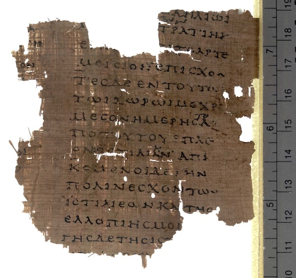

Commentary can contain anything expressible in Markdown notation. The dialect of Markdown used by Inweb is Github-flavored Markdown, an extension of Common Markdown which also supports (for example) tables and to-do lists, extended further to allow mathematics and footnotes. So it's quite flexible. There are many online guides to Markdown, but here are the main points:
Headings. Markdown has six levels of subheading, denoted # to ######. The top two
levels are meaningful to Inweb. The highest level, #, should be used only
on the opening line of a file, and to write the title text:
# Heapsort by J. W. J. Williams
After that, the file can contain any number of ## subheadings. Inweb uses
these when breaking the material into "paragraphs", and renders them neatly
when weaving the web. For example, a file of 500 lines might sensibly be
broken up with five or six subheadings like this one:
## Some Initialization
Lesser subheadings are ignored by Inweb, or rather, are treated as commentary features like any other: they're probably best not used, but chacun à son goût.
Character set. Inweb uses Unicode throughout and expects files to be encoded as UTF-8. This means that the commentary in a web can freely use exotica like this:
Chacun à son goût, as the French say.🇫🇷
Older compilers and interpreters may not accept Unicode in their source code, but the tangled output from a web will only contain what characters we use in the holons, not the commentary. So this web:
Περσέων μέν νυν οἱ λόγιοι Φοίνικας αἰτίους φασί γενέσθαι τῆς διαφορῆς.
phoenicians.angry = true;
tangles to a program containing no Greek characters, since those were only present in the commentary.
Styling of text. The following:
* Code can be written in `backticks` like so.
* _Emphasis_ and **strong emphasis** are technically not the same thing as
italics and boldface, but are often rendered that way.
* ~Strikethrough~ if a word displeases you.
renders as:
-
Code can be written in
backtickslike so. -
Emphasis and strong emphasis are technically not the same thing as italics and boldface, but are often rendered that way.
-
Strikethroughif a word displeases you.
The full rules on how to resolve complex interlacings of these notations are too arcane to give here. Inweb follows Common Markdown precisely, and passes all of its test cases. A few cases come up often-ish:
-
this_is_not_emphasisdoes not produce emphasis because the underscore characters_are not at word boundaries. It produces this_is_not_emphasis. -
_escaped\_underscore_uses a backslash\_to mean "really an_, not the end of the current emphasis run". The result is escaped_underscore. -
``insignificant`backtick``uses doubled backtick markers so that the inner backtick is not treated as the end of the code matter. The result isinsignificant`backtick. If you're curious as to how to get``insignificant`backtick``to appear, the answer is``` ``insignificant`backtick`` ```, and this really ought to cure your curiosity.
Lists. Lists are indicated with bullets. This:
A tight list has less vertical space between the items. Both sorts can have
nested sub-lists.
* First item.
* Second item.
* Nested item 1.
* Nested item 2.
* Third item.
Comes out as:
A tight list has less vertical space between the items. Both sorts can have nested sub-lists.
- First item.
- Second item.
- Nested item 1.
- Nested item 2.
- Third item.
It's also possible to have a numbered list:
1. First item.
2. Second item.
* Nested item 1.
* Nested item 2.
3. Third item.
...though a quaint feature of Markdown is that it ignores the numbers actually used in the text, and applied its own counting from 1.
- First item.
- Second item.
- Nested item 1.
- Nested item 2.
- Third item.
Code shown in commentary. Short code extracts can be backticked (see above).
In most uses of Markdown, longer code extracts would be indented by one tab
stop, but we can't do that here, because if we did then the code would become
part of the program. Instead we use an alternate Markdown notation, "fences":
```
int strangiato(int villa) {
return 0;
}
```
producing:
int strangiato(int villa) { return 0; }
As in regular Markdown, a programming language can be specified, telling Inweb how to syntax-colour the result:
int strangiato(int villa) { return 0; }
The language has to be one which Inweb knows about, but Inweb can easily be taught about new languages as needed: see About Languages.
Links. Links in the web-page sense are written with square and then round brackets in Markdown:
[this text is highlighted](https://en.wikipedia.org/wiki/Highlights_(band))
produces: this text is highlighted.
Inweb pre-populates the Markdown links dictionary in such a way that if a web
has multiple sections then the names of those sections can be used as self-contained
links. For example, if a web has a section called "Gold-Digging Ants", then from
anywhere in the web, the link [Gold-Digging Ants] will produce the words
"Gold-Digging Ants" and also link them to the relevant section. Alternatively,
to provide different text which is still linked there:
Some defend [Herodotus's more improbable claims](Gold-Digging Ants).
For this to work, the section name can't be a positive number, because that would be read instead as a footnote (see below).
Mathematics. The usual reason to dip into mathematics notation in program commentary is to agonise over running time, like so:
Though it is often said that sorting algorithms cannot run faster than $O(n\log n)$
time when sorting $n$ items, this is only true for comparison-based sorting, and
counting sort trades memory for time in order to run in $O(n+k)$ time, where $k$
is the maximum value of the items being sorted.
Here the mathematics $n$, $O(n\log n)$, and such are written in \INWEBMATH({\rm\TeX}\INWEBMATH) notation,
and sandwiched in between dollar signs $. This produces \INWEBMATH(n\INWEBMATH), \INWEBMATH(O(n\log n)\INWEBMATH) and so on,
and will be rendered in HTML using the \INWEBMATH({\rm\TeX}\INWEBMATH) engine to produce a typeset fragment of
a page which is then displayed as an image. Longer, centred-on-the-page, formulae
can be displayed using doubled dollar signs $$, so:
$$ \Gamma(z) = \int_0^\infty t^{z-1}e^{-t} {\rm d}t $$
types a formula for the gamma function:
$$ \Gamma(z) = \int_0^\infty t^{z-1}e^{-t} {\rm d}t $$
All of this takes away the ability to use the dollar character for its own sake,
as in the phrase "Herodotus' Histories currently ship for $18.44 in paperback".
The trick is to write \$18.44 not $18.44, and the backslash then deactivates
the otherwise special behaviour of $. Of course, this then takes away the
backslash, but \\ then works. So /a little tent\\ produces /a little tent\.
Tables. See Github's documentation on writing tables in Markdown for more, but e.g.:
MS | Library | Shelfmark | Century
-- | ------------------------------- | ---------------------- | ---------
A | Laurentian | Plutei 70.03 | 10th
B | Angelicanus | | 11th
D | Vatican | gr 2369 | 10th/12th
R | Vatican | gr 123 | 14th
S | Emmanuel College Library | 'Sancroftianus' | 14th
U | Vatican | Urbinas 88 |
C | Laurentian | conventi soppressi 207 | 11th
E | Bibliotheque National de France | suppl. 134 | 13th
P | Bibliotheque National de France | gr. 1633 | 14th
produces:
| MS | Library | Shelfmark | Century |
|---|---|---|---|
| A | Laurentian | Plutei 70.03 | 10th |
| B | Angelicanus | 11th | |
| D | Vatican | gr 2369 | 10th/12th |
| R | Vatican | gr 123 | 14th |
| S | Emmanuel College Library | 'Sancroftianus' | 14th |
| U | Vatican | Urbinas 88 | |
| C | Laurentian | conventi soppressi 207 | 11th |
| E | Bibliotheque National de France | suppl. 134 | 13th |
| P | Bibliotheque National de France | gr. 1633 | 14th |
Quotations.
"Those of the Persians who have knowledge of history declare that the Phoenicians first began the quarrel. These, they say, came from that which is called the Erythraian Sea to this of ours; and having settled in the land where they continue even now to dwell, set themselves forthwith to make long voyages by sea."
was produced by:
> "Those of the Persians who have knowledge of history declare that the
> Phoenicians first began the quarrel. These, they say, came from that which
> is called the Erythraian Sea to this of ours; and having settled in the land
> where they continue even now to dwell, set themselves forthwith to make
> long voyages by sea."
Note the running > marks, which are essential on each line. The quotation
marks " at the start and end here were on the other hand optional.
Ruled lines. Feel free to draw a line:
by means of:
Feel free to draw a line:
--- ---
Pictures. Traditional Markdown is .
This works fine, but is a little awkward because you need to know the relative
URL to whichever directory holds the images, and also, you need to put them there.
When Inweb renders Markdown images in a weave to HTML, then, there are two bonus
features. Firstly, if the image filename contains no slashes /, as in the
following example...

...then Inweb finds the image in the Figures subdirectory of the directory
containing the colony file, and automatically copies it to where it's needed.

Secondly, images can be resized, which regular Markdown image links would not allow:


produces:
And the text "fragment from book VIII on Papyrus Oxyrhynchus 2099" is used as the alt-text for the image, which will be shown by screen-readers.
Footnotes. These add a certain style to commentary,1 and can be used to supply trivia.2 That last sentence was typed as:
These add a certain style to commentary,[1] and can be used to supply
trivia.[2]
[1] Some would say.
[2] Herodotus was born not far from the site of the future Tomb of Mausolus, one of
the seven wonders of the ancient world, from which the word _mausoleum_ derives.
Square brackets in Markdown ordinarily mean links. They do here, too: what is going on is that a link whose text and address are both the same, and are both a positive integer of 1 to 9 digits, is read as being a link to the footnote of that number. Javascript (if running) then presents the result as a pop-up. In each paragraph there must be an equal number of cues as there are notes, and both numberings must be continguous. In other words, they have to match perfectly. Footnote texts must be the final things in the paragraph.
In the web as typed, footnote numbering begins again at 1 in each paragraph. As rendered, though, the notes are renumbered throughout the page they're on: this happens automatically.